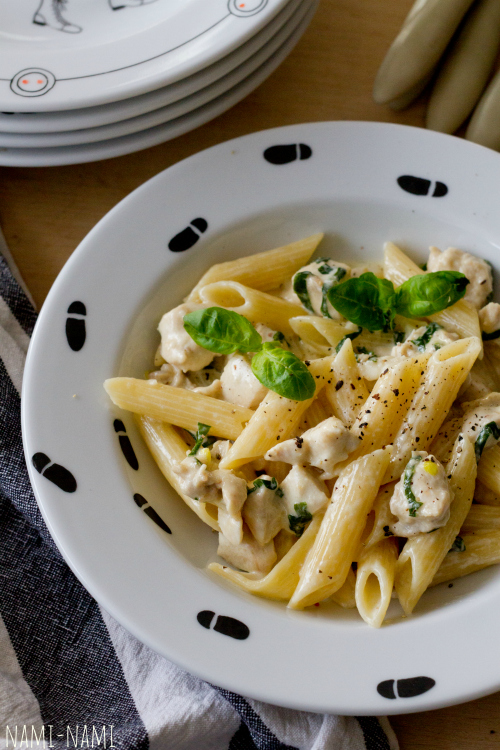

Kanapasta retsept
| Koostisosad |
Kogus |
| Makaronid |
400g |
| Kanafilee |
400g |
| Vesi |
1l |
| Riivitud parmesan |
100g |
| Hakitud petersell |
Paar lehte |
| Küüslauk |
2 küünt |
| Rõõsk koor 35% |
4dl |
Juhend
- Lõika kana rinnafilee või kintsuliha väikesteks tükkideks või peenikesteks ribadeks. Haki küüslauk. Riivi vajadusel juust. Haki basiilik või rebi basiilikulehed väiksemateks tükkideks. Kuumuta suures potis vesi keemiseni, et saaks sinna hiljem makaronid lisada.
- Kuumuta suurel paksupõhjalisel praepannil õli keskmisel kuumusel. Lisa jaokaupa kanatükid (kõike korraga lisades jahtub pann liialt maha) ning prae segades, kuni kanatükid on kenasti jumekad. Maitsesta soola-pipraga, siis lisa pannile küüslauk ja prae veel minut aega.
- Keeda makaronid samal ajal al dente. Kui makaronid on valmis, siis kurna ja lisa kohe kana-koorekastme hulka, lisa ka juust ja basiilik. Sega õrnalt läbi, lase veel mõned minutid haududa ja serveeri.
- Serveerimisel puista peale veel värsket peterselli ja riivitud juustu, soovi korral jahvata veskist veidi musta pipart ka juurde.

Bon appetit!